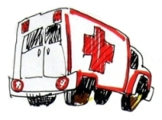

This page has usage examples for the following words:
ambulance 救急車 きゅうきゅうしゃ
amount due 請求額（患者の支払い額） せいきゅうがく（かんじゃのしはらいがく）
being unconscious 意識不明である いしきふめいである
chest pain 胸痛 きょうつう（むねのいたみ）
consciousness 意識 いしき
convulsion 痙攣 けいれん
emergency room 救急室 きゅうきゅうしつ
medical cost 医療費 いりょうひ
medical insurance 医療保険 いりょうほけん
Call 911. My husband is unconscious.
９１１に電話して下さい。夫が意識不明です。
９１１に でんわしてください。おっとが いしきふめいです。

My husband's having a convulsion.
夫が痙攣をおこしています。
おっとが けいれんをおこしています。
Send an ambulance right away, please.
すぐに救急車を送って下さい。
すぐに きゅうきゅうしゃをおくってください。
Our medical insurance is through his employment.
私共の医療保険は、主人の雇用先からのものです。
わたくしどもの いりょうほけんは、しゅじんのこようさきからのものです。
I'll send you our medical insurance forms by fax.
私共の医療保険書は、ファックスで送ります。
わたくしどもの いりょうほけんしょは、ファックスでおくります。
I heard the other day that my friend’s husband was brought in to the emergency room. Later, my friend explained the circumstance. One night, he suddenly gave a groan and became unconscious. My friend phoned 911. The Emergency crew came over to their house right away. When her husband regained consciousness, he was brought in to the emergency room of a local hospital, where an emergency room doctor and an internist examined him. CT scan was performed. Thereafter, he was transported by a helicopter to the medical center where a neurologist and other specialists were available. Fortunately, he was discharged in good health from the medical center. Now, one week later, a few medical bills started to come in. Emergencies such as this happen to all of us. I think it is important to be prepared for situations like this.
最少の心構え
先日、友人のご主人が救急室に運ばれたとのことで、事情をたずねてみると、夜間、突然うめき声を発し、意識不明になられたそうです。友人はともかく９１１に電話して救急隊員を呼び、意識がもどった段階で救急室に運ばれました。そこで、救急医、更に、内科医に診察を受け、CTスキャンを取られました。その結果、神経内科、外科医のいる専門病院にヘリコプターで運搬されたとのことです。幸いにも専門病院からも退院出来ましたが、１週間後に請求書（medical bill)が次々に送られて来ているとのことです。こういった緊急の事態は、だれにもおこりうることですので、ぜひこの際、少しでも心構えをしておきたいと思います。
Unlike in the old days when medical knowledge was something unavailable to the general public, medical information is nowadays easily obtainable through TV and the Internet. Thus, it becomes inexcusable not to have some medical knowledge. It is extremely important to be prepared for at least an emergency. First, when you phone 911, say clearly your name and address. Next, describe concisely the condition of a patient, for example, he/she is unconscious, complaining of chest pain or having a seizure. Also, at the emergency room, describe plainly to a doctor what happened. The most important thing to keep in mind will be to keep cool even though you are in a difficult situation.
The first medical bill you receive usually shows the whole cost before insurance payments. Just wait for the bills which show insurance payments. If you realize that your insurance company is not yet billed, notify the sender of bills of your insurer’s name. When you have any questions, phone the hospital and your insurance company until you solve the problems.
医療についての知識が皆無であった過去と違い、現今ではテレビでもかなりの情報をもたらしていますから、全くの無知ではすまされなくなったのは事実です。最少の心構えをしておくことはたいへん重要です。まず、９１１に電話したら、名前と住所をはっきり伝えます。次に、患者の容態を簡潔に述べます。例えば、意識不明です、胸痛を訴えています、けいれんをおこしています、といった具合です。救急室では、医師の質問にもありのまま答えます。何よりも大切なのは、あせる心をおさえて待つということにつきると思います。
請求書は、医療保険の支払い前に全額を知らせてくるのがほとんどで、保険の支払いを待ちましょう。もし保険会社に連絡していない場合は、請求先にご自分の医療保険はこれこれであると知らせます。不明の点は遠慮なく病院なり保険会社なりにたずねることです。
My two cents 一言おせっかい
If you have any other insurance such as disability insurance, make sure to follow through proceedings.
日頃からせっせと払っている障害保険も、このような事態がおこった時のものです。手続きをするのを忘れないように。
[sa01]
| © 1995-2013 NACOS International Institute. All Rights Reserved. |